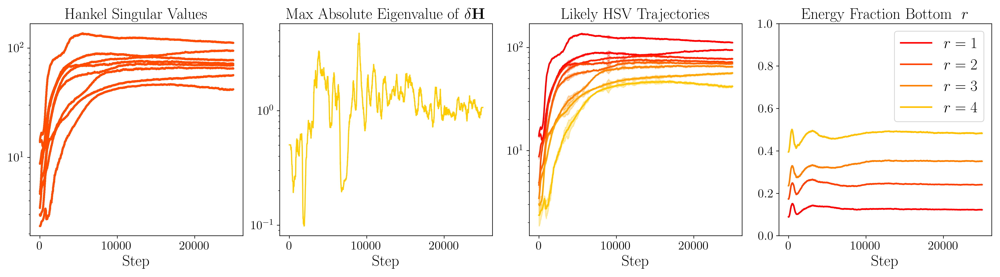

CompreSSM walkthrough
This blog post breaks down our work: The Curious Case of In-Training Compression of State Space Models with Philipp Nazari, Daniela Rus, and T. Konstantin Rusch.
You can follow the links for the paper and implementation.

Image generated with Google Nano Banana
Motivation
State-space models (SSMs) are a potent tool for sequence modeling. At their core, they rely on an incremental recurrence: at each time step, the model updates a hidden state that summarizes all relevant information from the past.
The cost of computing an update scales with the size of the hidden state, yet its different dimensions are far from being equally important. Some may be redundant or offer no contribution to the learning process. Hence, our motivation: identify and truncate the unnecessary parts of the hidden state in-training without sacrificing performance.
Why compress in-training?
If we detect low-energy state directions early and truncate them on the fly, the model spends most of training in its compressed form. That means faster optimization, lower memory footprint, and performance that tracks the larger model at a fraction of the computational cost.
Major Insight
There is a core obstacle in pruning in-training snapshots: can we ensure that we do not remove parts of the hidden state early that might become useful later?
Our key insight: we can not only compute the influence of each dimension as Hankel singular values, but also track their long-term impact. We show this by leveraging the symmetry of the Hankel matrix, its continuity with respect to gradient updates, and the application of Weyl’s theorem.
Empirically, we observe a striking pattern: low-energy directions stay low-energy throughout training. Their relative contribution remains consistently small as optimization progresses. This makes early pruning fundamentally different from naive parameter dropout — it becomes predictive rather than speculative.
Mathematical Preliminaries
We use discrete Linear Time-Invariant (LTI) systems as the foundation as they capture the essence of most SSMs. A system $\mathcal{G}$ is defined by the following state-space equations for $k \in \mathbb{N}$:
where $\mathbf{h} \in \mathbb{R}^{n}$ is the state, $\mathbf{x} \in \mathbb{R}^{p}$ the input, and $\mathbf{y} \in \mathbb{R}^{q}$ the output, with the state matrices $\mathbf{A} \in \mathbb{R}^{n \times n}$, $\mathbf{B} \in \mathbb{R}^{n \times p}$, $\mathbf{C} \in \mathbb{R}^{q \times n}$, and $\mathbf{D} \in \mathbb{R}^{q \times p}$.
We make standard assumptions that are usually incorporated into SSMs by design:
Assumptions
1. Stability. The system is stable, i.e., all eigenvalues of $\mathbf{A}$ satisfy $|\lambda_i| < 1$.
2. Controllability. The pair $(\mathbf{A}, \mathbf{B})$ is controllable, meaning the state $\mathbf{h}$ can be steered from any initial state to any final state in finite time.
3. Observability. The pair $(\mathbf{A}, \mathbf{C})$ is observable, i.e., observing the input $\mathbf{x}$ and output $\mathbf{y}$ over a finite time suffices to determine the initial state $\mathbf{h}_0$.
Balanced Truncation
Balanced truncation allows us to systematically remove weakly contributing states while preserving stability and controlling approximation error. The key idea: rank each state by how easily it can be influenced by inputs and how strongly it appears in the outputs.
These notions are captured by the controllability and observability Gramians, $\mathbf{P}$ and $\mathbf{Q}$.
These satisfy the discrete Lyapunov equations:
$$
\begin{aligned}
\mathbf{A}\mathbf{P}\mathbf{A}^\top - \mathbf{P} + \mathbf{B}\mathbf{B}^\top &= 0,
&\mathbf{P} = \sum_{i=0}^\infty \mathbf{A}^i \mathbf{B}\mathbf{B}^\top (\mathbf{A}^\top)^i \\[0.5em]
\mathbf{A}^\top \mathbf{Q} \mathbf{A} - \mathbf{Q} + \mathbf{C}^\top \mathbf{C} &= 0,
&\mathbf{Q} = \sum_{i=0}^\infty (\mathbf{A}^\top)^i \mathbf{C}^\top \mathbf{C} \mathbf{A}^i
\end{aligned}
$$
Large entries in $\mathbf{P}$ indicate states that are easy to control, while large entries in $\mathbf{Q}$ indicate states that are easy to observe.
Any minimal realization $(\mathbf{A},\mathbf{B},\mathbf{C},\mathbf{D})$ can be converted into its balanced realization using an invertible transformation $\mathbf{T}$ such that the controllability and observability Gramians become equal and diagonal:
$$ \mathbf{T}^{-1} \mathbf{P} \mathbf{T} = \mathbf{T}^{-1} \mathbf{Q} \mathbf{T} = \mathbf{W} = \operatorname{diag}(\sigma_1, \dots, \sigma_n), \quad \sigma_1 \ge \dots \ge \sigma_n > 0 $$
These diagonal entries $\sigma_i$ are the Hankel singular values (HSVs), ranking state dimensions by their contribution to the input–output behavior.
The same transformation $\mathbf{T}$ is then applied to the state-space matrices:
$$ (\mathbf{A}_b, \mathbf{B}_b, \mathbf{C}_b) = (\mathbf{T}^{-1}\mathbf{A}\mathbf{T}, \mathbf{T}^{-1}\mathbf{B}, \mathbf{C}\mathbf{T}) $$
Once in balanced form, the states are naturally ordered by importance, allowing a partition according to the HSVs:
$$
\mathbf{A}_b = \begin{bmatrix} \mathbf{A}_{11} & \mathbf{A}_{12} \\ \mathbf{A}_{21} & \mathbf{A}_{22} \end{bmatrix},\quad
\mathbf{B}_b = \begin{bmatrix} \mathbf{B}_1 \\ \mathbf{B}_2 \end{bmatrix},\quad
\mathbf{C}_b = \begin{bmatrix} \mathbf{C}_1 & \mathbf{C}_2 \end{bmatrix},
$$
with $\mathbf{A}_{1,1} \in \mathbb{R}^{r \times r}$, $\mathbf{B}_{1} \in \mathbb{R}^{r \times p}$, and $\mathbf{C}_{1} \in \mathbb{R}^{q \times r}$ corresponding to the top $r$ HSVs. Keeping only those top $r$ balanced states yields the reduced system:
$$ \hat{\mathcal{G}} = (\mathbf{A}_{11}, \mathbf{B}_1, \mathbf{C}_1, \mathbf{D}) $$
The approximate reduced system remains stable, and the input-output error is bounded:
$$ \|\mathcal{G} - \hat{\mathcal{G}}\|_\infty \le 2 \sum_{i=r+1}^n \sigma_i $$
HSVs can also be computed directly from the original Gramians without explicitly forming $\mathbf{T}$:
$$
\boldsymbol{\sigma} = \operatorname{sort}_{\downarrow}\big(\sqrt{\mathrm{spec}(\mathbf{P}\mathbf{Q})}\big).
$$
Efficient algorithms exist to solve the Lyapunov equations and compute the transformation $\mathbf{T}$.
In CompreSSM, we exploit this structure dynamically during training rather than as a post-hoc compression step.
In summary, balanced truncation provides a rigorous, principled method to compress a state-space model while retaining its dominant dynamics.
Hankel singular values serve as an intuitive "energy ranking" of the states, guiding which dimensions can be safely truncated.
When training SSMs with gradient descent, the state matrices are updated incrementally.
Understanding how the Hankel singular values evolve under these updates is crucial for safe early reduction of state dimensions.
Intuitively, in-training truncation is valid if:
Mathematically, between gradient steps, the state matrices $(\mathbf{A},\mathbf{B},\mathbf{C})$ are perturbed:
$$ \mathbf{A}' = \mathbf{A} + \delta \mathbf{A}, \quad
\mathbf{B}' = \mathbf{B} + \delta \mathbf{B}, \quad
\mathbf{C}' = \mathbf{C} + \delta \mathbf{C} $$
The Hankel matrix $\mathbf{H}$ defined by:
$$ \mathbf{H} = \sqrt{\mathbf{P}^{1/2} \mathbf{Q} \mathbf{P}^{1/2}} $$
is symmetric positive definite, and its eigenvalues are exactly the Hankel singular values. It is easy to see that $\mathbf{H}$ depends continuously on the system matrices $(\mathbf{A},\mathbf{B},\mathbf{C})$.
Let $\mathbf{H}' = \mathbf{H} + \delta \mathbf{H}$ denote the post-update matrix.
We can apply Weyl’s theorem to bound how much the HSVs can change between gradient steps.
Let $\mathbf{W}$ and $\mathbf{W}'$ be Hermitian matrices and define $\delta \mathbf{W} = \mathbf{W}' - \mathbf{W}$.
Let $\lambda_i(\mathbf{W})$ denote the $i$-th largest eigenvalue. Then, by Weyl’s theorem:
$$ |\lambda_i(\mathbf{W}') - \lambda_i(\mathbf{W})| \le \max_i |\lambda_i(\delta \mathbf{W})| $$
In other words, the eigenvalues of a Hermitian matrix cannot change more than the largest eigenvalue of the perturbation.
Applying Weyl’s theorem to $\mathbf{H}$ and its perturbation $\mathbf{H}'$ yields:
$$ |\sigma_i' - \sigma_i| \le \max_i |\lambda_i(\delta \mathbf{H})| $$
This ensures that between gradient steps, each Hankel singular value can change at most by the largest absolute eigenvalue of $\delta \mathbf{H}$.
In practice, empirical evidence amassed on a variety of datasets, number of blocks, and state dimensions, shows that:

We plot the evolution of HSVs for a single LRU block trained on MNIST with state dimension 8. The plots from left to right show:
These plots confirm that dimensions with small early HSVs typically remain negligible, justifying in-training truncation.
In summary, by combining Weyl’s theorem, continuity of the symmetric Hankel matrix, and empirical tracking of singular values,
we can confidently assume that in most cases low-energy state dimensions identified early in training can be reduced without compromising the final model’s performance.
We periodically compress the state-space model during training by following these steps at each SSM block:
To validate our in-training compression approach, we train a linear recurrent unit (LRU) on standard benchmarks including CIFAR10. We begin reduction from the full model size of 384 states per block (6 layers in this instance) and perform four evenly spaced truncation steps during the learning rate warm-up phase (first 10 % of training).
The plots above show the performance of compressed and non-compressed models. The left plot shows test accuracy versus final state dimension, while the right plot shows accuracy versus normalized training time. Grey points indicate non-reduced models, and shades of orange represent models compressed during training with varying energy tolerances.
Rather than collapsing, CompreSSM models
retain key task-relevant dynamics even at small state dimensions —
a capability that models trained from scratch at the same size fail to match.
Furthermore, models that begin large and are compressed in training
converge nearly as fast as models that start at the final reduced size,
yet achieve performance close to the original full-size model,
combining efficiency with high fidelity.
Gramians computation
Additional details
In-Training Reduction
Hankel Singular Values Continuity
Hermitian spectral stability (Weyl’s Theorem)
Lemma: Continuity of Hankel singular values under training updates
Empirical illustration details
The CompreSSM algorithm
Results